The kit showcase as a component sheet · before and after
2026-10-26. ui/kit.html at 1440 and 390: a sticky sidebar with a filter and every component under its role (a menu on a phone), one short intro line, and one card per component: a header in the documentation's style, then every state on its own stage, labelled under it. The specimens are unchanged.
The first screen
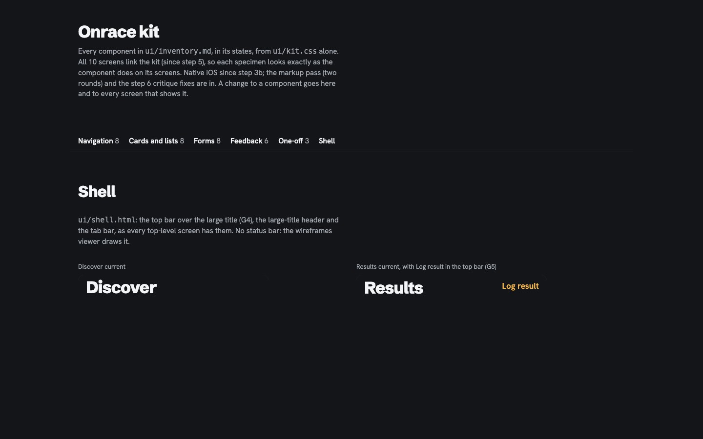
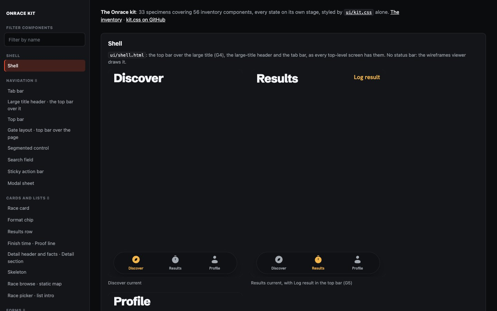

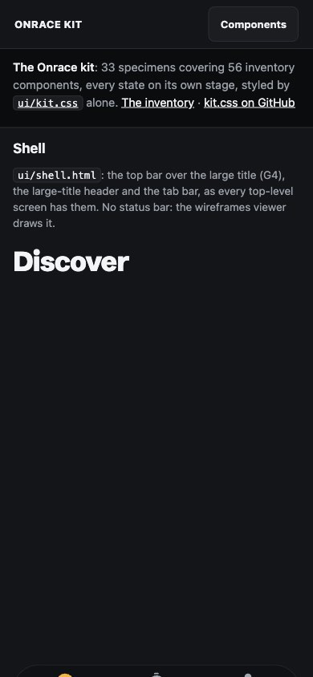
A card: Top bar
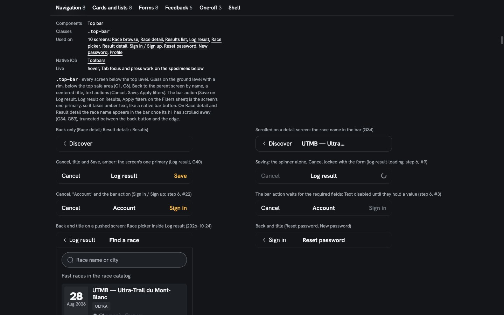
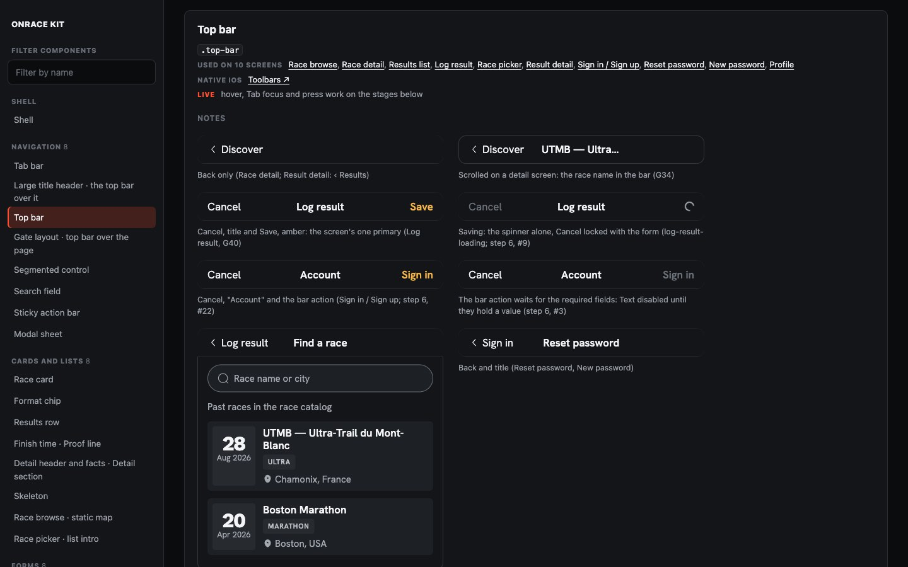
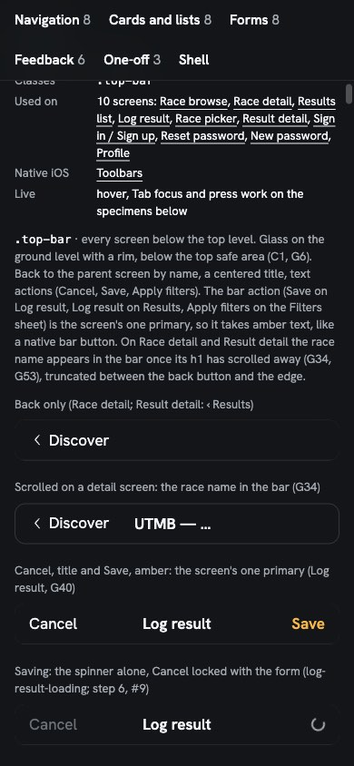
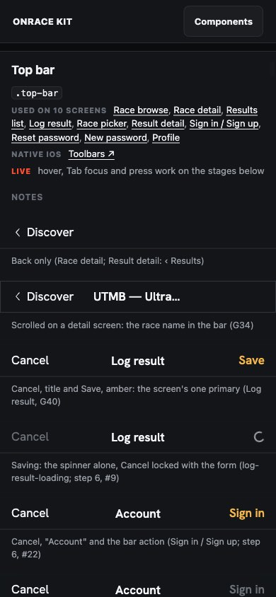
A card: Race card
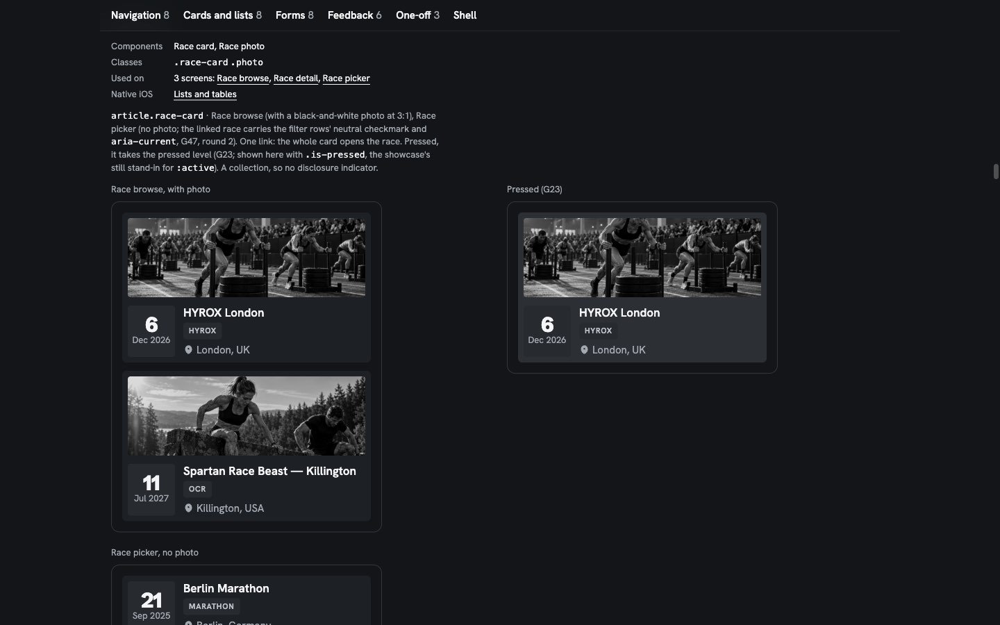
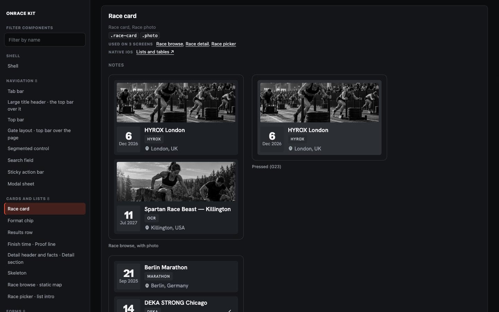
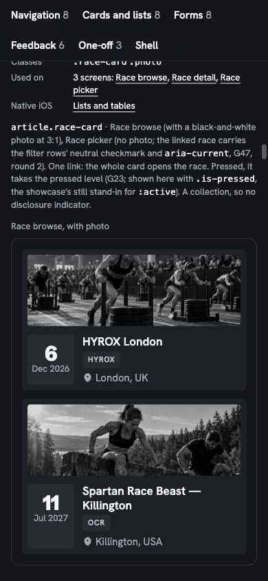
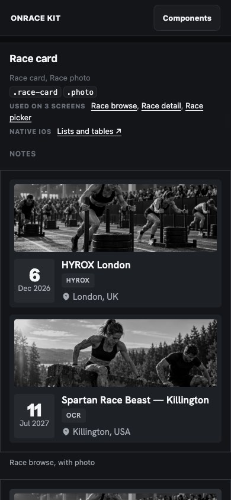
New: the filter and the phone menu
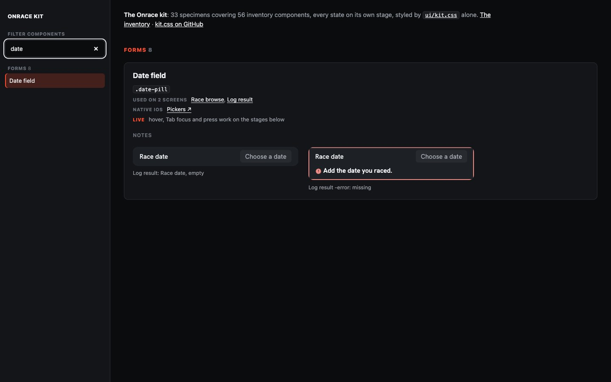
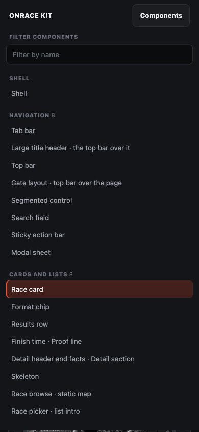